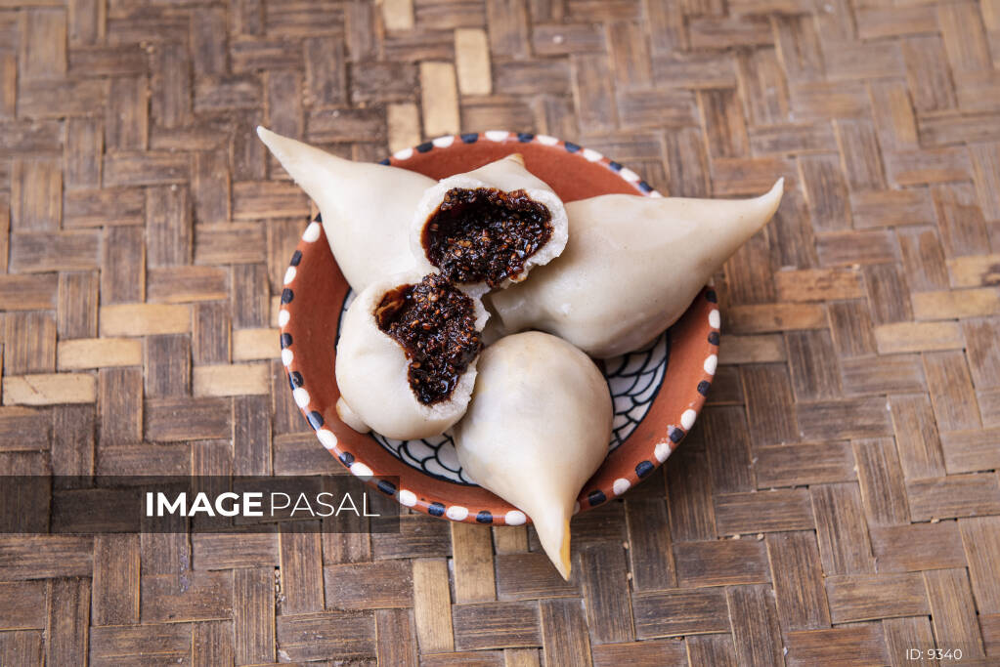

Recipe for the Yomari.

Yomari is a traditional Nepali delicacy that is commonly eaten during the festival of Yomari Punhi. It is a steamed dumpling that is made from rice flour and is filled with a sweet mixture of chaku (a type of molasses), sesame seeds, and coconut.
The dumpling has a distinctive shape, resembling a fish or a fig, and is typically served with a side of achar (pickle) made from tomatoes or potatoes. The dough for the yomari is made by mixing rice flour with water and then kneading it until it forms a smooth dough. The filling is made by combining chaku, sesame seeds, and coconut, which is then formed into small balls.
To make the yomari, a small ball of dough is flattened into a disc and then wrapped around the filling to form a small pouch. The pouch is then shaped into the characteristic fish or fig shape by pinching the edges and forming ridges along the surface. The yomari is then steamed until it is fully cooked and the filling is warm and gooey.
Yomari is not only a popular treat during Yomari Punhi but is also enjoyed throughout the year as a sweet snack or dessert. It is a beloved Nepali dish that is cherished for its unique shape and delicious taste.
Ingredient for the recipe.
For the dough:
- 2 cups of rice flour
- 1 and 1/2 cups of hot water
- 1 tablespoon of vegetable oil
For the filling:
- 1 cup of chaku (molasses)
- 1 cup of sesame seeds
- 1 cup of grated coconut
For serving: Tomato achar (pickle) or potato achar (pickle)
Instruction for the recipe
- In a mixing bowl, add rice flour and hot water. Mix well using a spoon until it forms a smooth dough. Add vegetable oil and knead it with your hand for a few minutes until the dough becomes smooth and pliable. Cover the dough with a damp cloth and set it aside.
- In another bowl, combine chaku, sesame seeds, and grated coconut to make the filling. Mix well until all the ingredients are evenly combined.
- Take a small portion of the dough and roll it into a ball. Flatten it into a disc using your palms, and then make the edges thinner than the center.
- Add a small amount of the filling into the center of the flattened dough disc. Fold the dough over the filling to create a pouch, and then seal the edges by pinching them together.
- With your fingers, pinch and pleat the top of the yomari to give it the characteristic fish or fig shape. Repeat the process with the remaining dough and filling.
- Steam the yomari in a steamer for about 20 minutes, or until the yomari is fully cooked and the filling is warm and gooey.
- Remove the yomari from the steamer and let them cool for a few minutes before serving. Serve with tomato achar or potato achar on the side.
Now enjoy your delicious Nepali Yomari!
Return to the top
Return to the main page